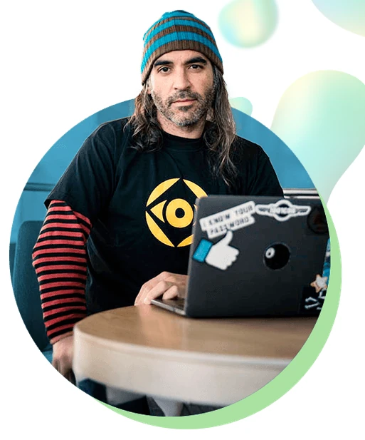

Nuestros profesores han trabajado con ...

El único programa educativo en habla hispana creado por los mejores Hackers y expertos en Cibserseguridad del mundo.


Tendrás acceso a nuestra bolsa de empleo de empresas colaboradoras, que confían en la calidad de nuestros Másteres y prefieren contratar a nuestros estudiantes. Empleo garantizado por contrato.

El que incluye mayor número de tecnologías, lenguajes, librerías y frameworks del mercado. Si encuentras un Máster más completo, te devolvemos tu dinero.

Gracias a un sistema de enseñanza pensado para que cualquier persona pueda aprender... sin importar tus conocimientos previos.

Te enseñamos las tecnologías que las empresas más contratan hoy en día, y te enseñamos a pasar sus procesos de selección.
Es actualmente CDO (Chief Digital Officer) de Telefónica, y es responsable de Innovación, Datos, Plataformas, Productos y Servicios Digitales. Previamente fue CDCO (Chief Digital Consumer Officer) y CDO (Chief Data Officer) donde fue responsable del lanzamiento de LUCA, Aura, 4P, Movistar Home & Living Apps.
Máster en Seguridad Informática por la UNIR. Trabajó en Informática 64 hasta 2013. Trabaja en Telefónica como responsable del equipo de Ideas Locas. Es MVP De Microsoft desde el año 2017. Es autor de diversos libros de temática de Ciberseguridad
Como Profesional Independiente desde 2014 hasta la actualidad. A lo largo de estos años he colaborado en proyectos con varias empresas, Izertis, New Horizons Madrid, ISACA Madrid, ACS & Dragados S.A., Agencia Tributaria AEAT o ArcelorMittal entre otras.
Después de 20 años trabajando para diferentes agencias del gobierno estadounidense, pasé al sector privado trabajando por más de 4 años en SAP Concur como ingeniero de software senior y security champion inicialmente, y luego como AppSec engineer. Actualmente desempeño ese mismo puesto, AppSec engineer, en Tesla.
Ingeniero/Grado en Informática de Sistemas, técnico Superior en Electrónica Digital y Máster en Seguridad de las TIC, con más de 15 años de experiencia como administrador de sistemas, realizando múltiples proyectos internacionales en EEUU y Canadá.
En la Escuela Superior de Ingeniería Informática de Albacete de la Universidad de Castilla-La Mancha. Lleva impartiendo asignaturas relacionadas con la ciberseguridad en grado y master más de 14 años en estudios oficiales. Previamente fue profesor en la Universidad Complutense de Madrid durante un año.
Con más de 9 años de experiencia en Ciberseguridad. Especializada en hacking ético y pentesting. Con experiencia en análisis de vulnerabilidades, pentesting, revisión de seguridad de redes e infraestructuras.
Trabaja en el equipo de Ideas Locas en Telefónica Digital. Máster en Seguridad de la Información. Docente en distintas universidades en materias de ciberseguridad.
Cybersecurity Full Stack Developer e Incident Response Handler en Telefónica Tech. Realiza pruebas de evaluación de vulnerabilidades y test de intrusión.
Máster en Ciberseguridad por la UNED, y actualmente doctorando en Tecnologías Industriales en la misma universidad, investigando y aplicando tecnologías como el Blockchain, IA y el Cloud Computing en diversos ámbitos empresariales.
Grado en Informática por la Universidad de Castilla La Mancha. Máster en Ciberseguridad y Seguridad de la Información en la Universidad de Castilla La Mancha. Dispone de varias certificaciones de AWS en temas de desarrollo y cloud.